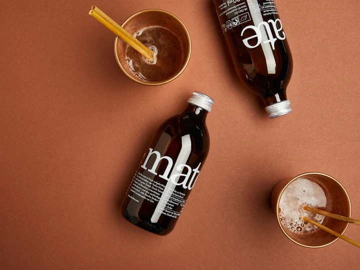

Mate Eistee Classic
|
Entdecken Sie MateRausch Eistee Classic – die perfekte Verbindung von traditionellem Mate-Tee und erfrischender Klarheit. Sorgfältig ausgewählte Yerba-Mate-Blätter aus Lateinamerika vereinen sich in diesem Getränk zu einer harmonischen Mischung aus intensivem Mate-Geschmack und erfrischender Eistee-Qualität.
MateRausch Eistee Classic bietet einen einzigartigen Genussmoment, der Tradition und modernen Lifestyle vereint. Ideal für unterwegs oder zu Hause – erleben Sie die erfrischende Fusion von Mate in einem neuen Licht. Gönnen Sie sich den belebenden Geschmack von MateRausch Eistee Classic und tauchen Sie ein in einen Moment der Erfrischung! Nährwerte: Energie 25kcal | Fett 0g | Zucker 6g | Eiweiß 0g | Salz 0g | Koffein 20mg | Vitamin C 10mg |
 |